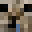

Welcome to the overworld
Build your story.
A comfy corner for your builds, adventures, and favorite blocks.

Player profile
Vergel Jr. D. Cutaran
Builder, explorer, and occasional creeper dodger.
View profileFeatured modpack
Raspberry Flavoured
A chill, vanilla-plus modpack packed with cozy adventures, automation, and exploration. Perfect for building your dream world block by block.
Check out the modpack!Current stats
Level 20
Book of wisdom
“Let it ride!”
- t9kwa
“Always dig straight down.”
- yomii
“Never punished.”
- Schwarzer
About this world
Made block by block
A custom bento-grid layout built to showcase my web development skills. This layout is designed to be simple, responsive, and easy to navigate. This space serves as a practical sandbox for exploring responsive web design, layout grids, and frontend development principles step by step. Made with HTML, CSS, JavaScript, and Bootstrap.
Ready to start?
Play now.
Want to give it a shot? Click the button below to jump into the world of Minecraft.
Click me!